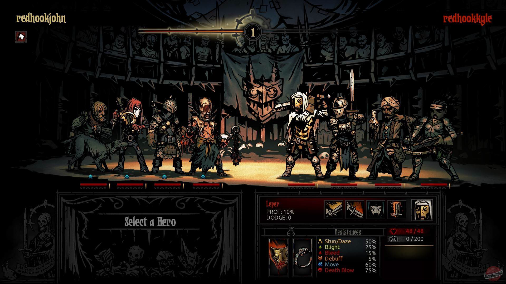
Battle UI, turn-based battle system
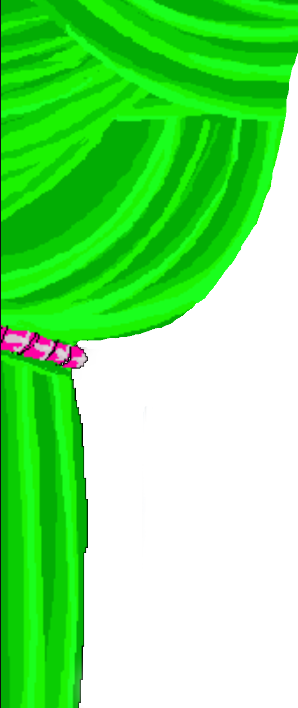
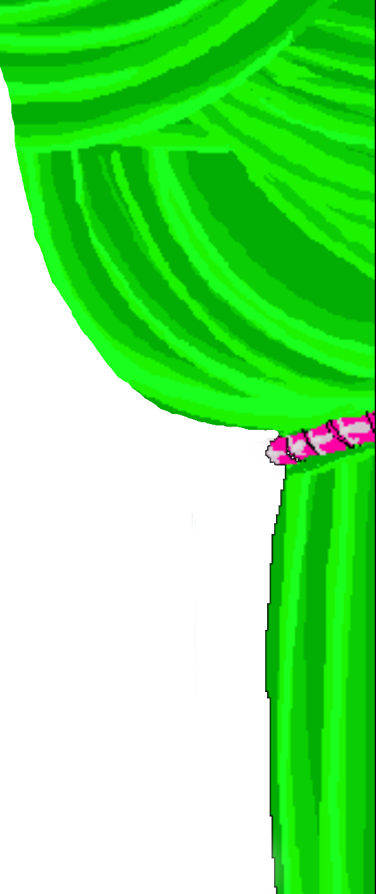
As a player, you will collect characters from the Homestuck universe.
Every character has a unique combination of an aspect, a class, and a strife specibus.
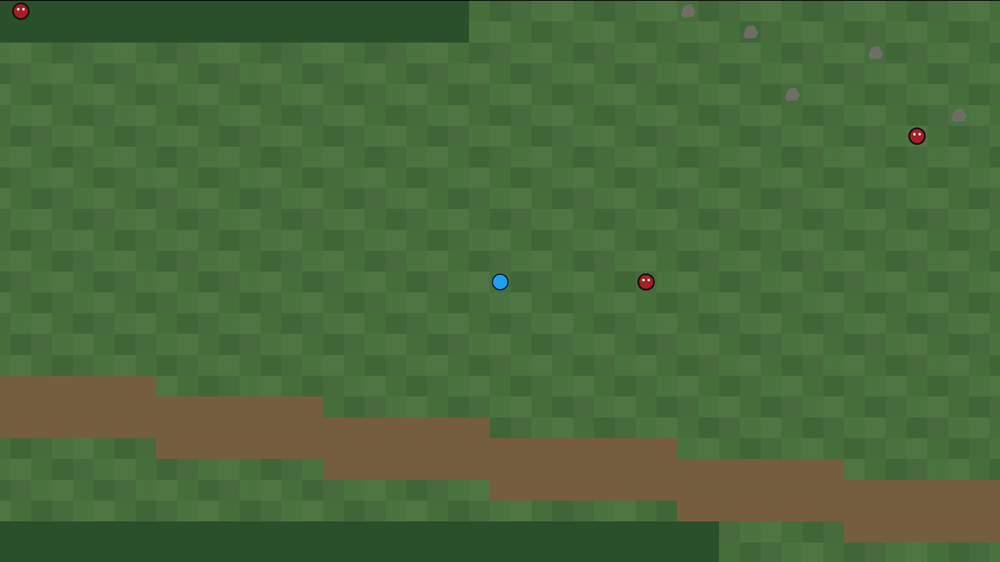
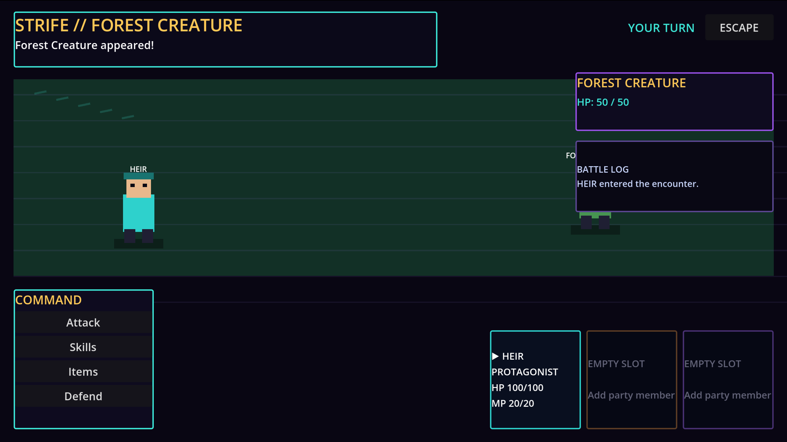
This will improve over time. Placeholders will be replaced with complete sprites once all the essencial mechanics have been implemented.
It has something to do with a certain clown.
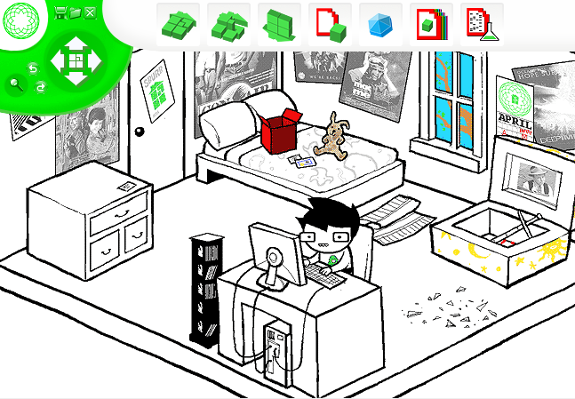
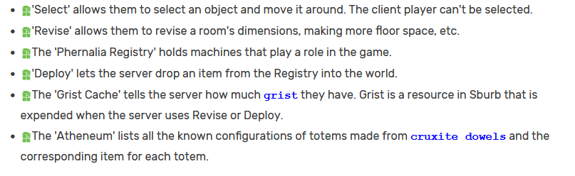
Your home/hub that can be modified, expanded, and upgraded.
Isometric for Overworld and Top-down for Strifes.
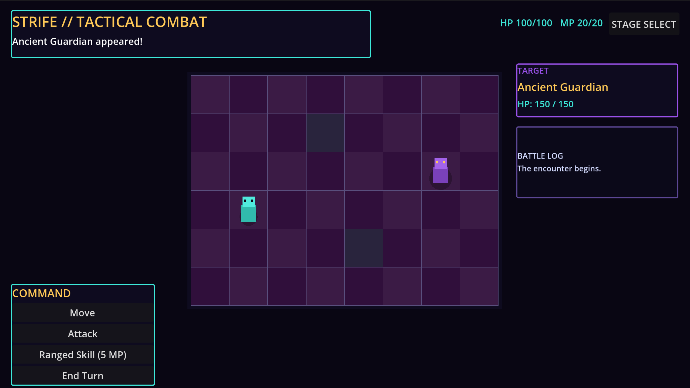
Unlock new skills, gain levels, and buy fraymotifs.
A meta-commentary on videogames. John will be his own server player.
::::)
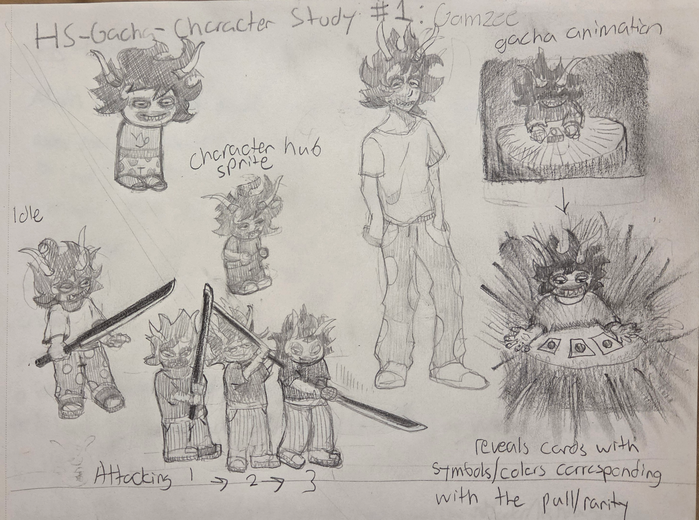
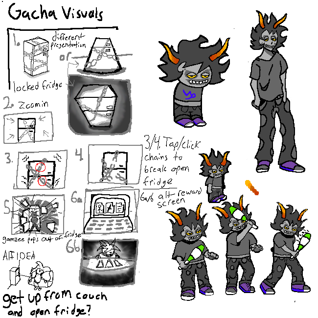
The clown
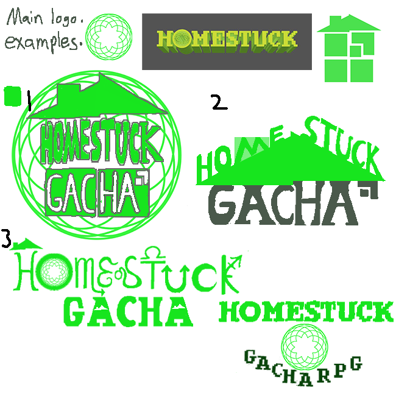
Game logo variants
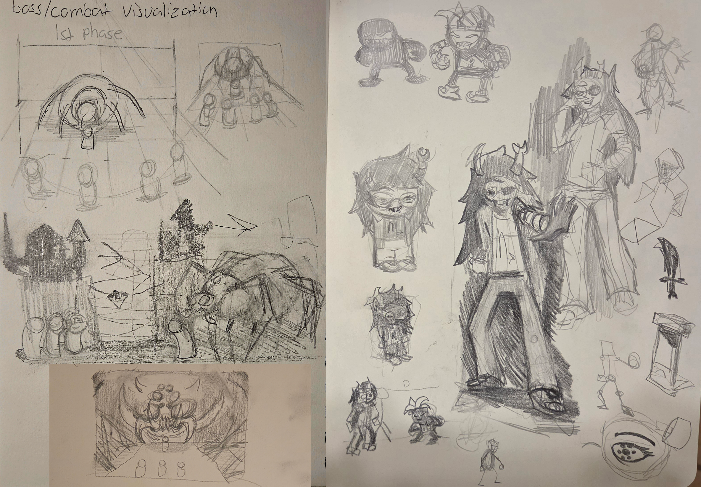
Vriska Boss sketch
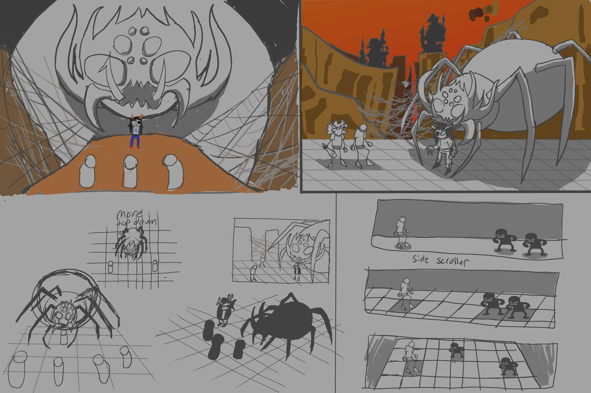
Boss battle
The gameplay loop consists of distinct stages: first, you build your base, then you fight enemies, get resources for building more and upgrading your characters, progress the story, and, finallly, pull a new character from the gacha. You start as John Egbert and as soon as you insert the game disk into your PC, the plot of HGRPG diverges from the Canon. We are going to try and make it FUN.

Battle UI, turn-based battle system
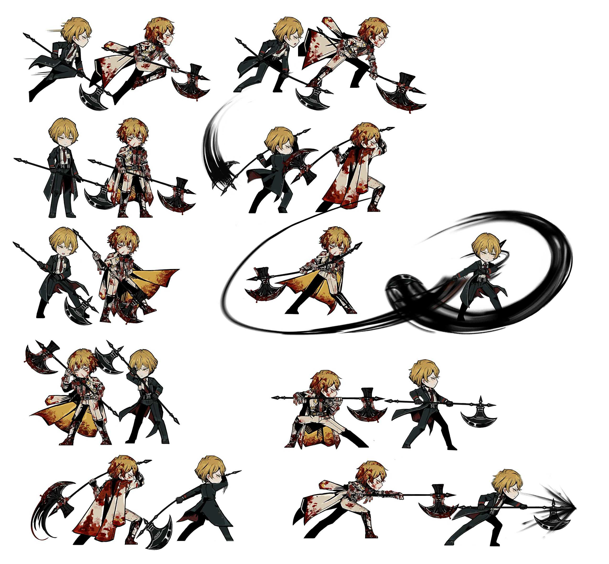
Sprites, attack animations
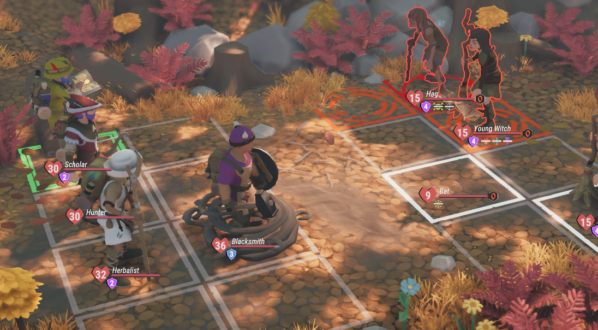
Grid-based movement
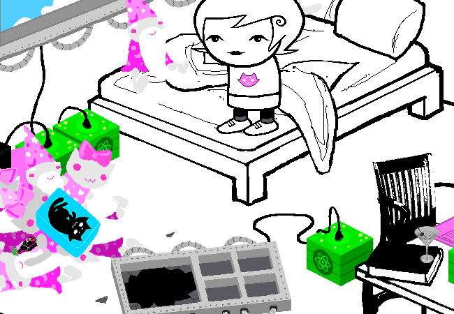
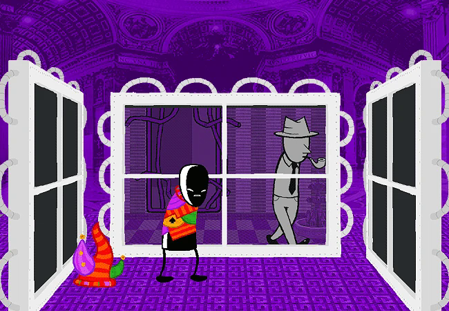
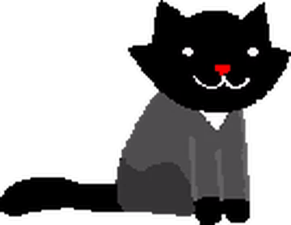
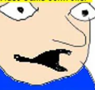
L-AMP
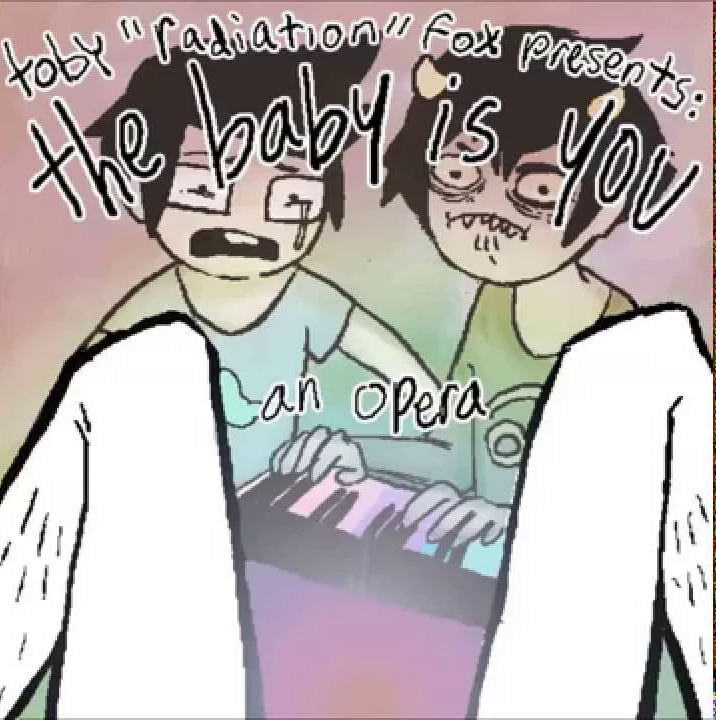
Requited - Clark Powell